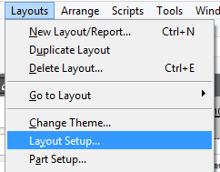
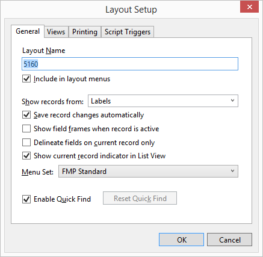
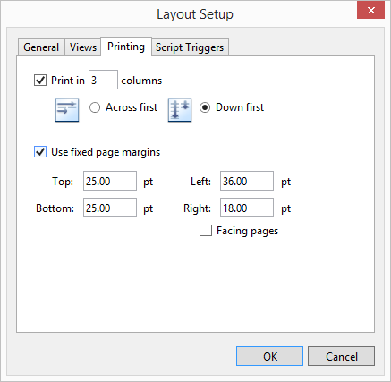
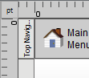

Fix Printer Labels
Due to variations in printers and print drivers, labels may not line up as they should on a label sheet. In such cases, the label layout will need to be adjusted to accommodate your particular printer. This procedure can only be accomplished using a full version of FMP software.
How to Adjust Labels for your Printer
-
Open the Product Labels file.
-
In the menu bar, click Perform and choose Restore Full Menus.

-
Also in the menu bar, click View and choose Status Toolbar.

-
In the menu bar, click View and choose Layout Mode.

-
This is the screen you should see.

-
In the top left corner, look for the Layout field. Click 'Data Entry' to see a drop down list of available label layouts. Select one of these to modify or to duplicate. The checkmark indicates the current layout.

-
Here is what Layout 5160 might look like:

-
To adjust the margins: in the menu bar, click Layouts and choose Layouts Setup...

-
The Layout Setup dialog box appears.

-
Open the Printing tab and click in the Use fixed page margins box.

-
Enter the correct page margin sizes into the fields (this may take experimentation and multiple tries before finding values that work correctly with your printer).
Caution: If the amount of measurement is not indicated in inches (in) then click Cancel. Next, click the upper-left corner of the layout where the horizontal and vertical rulers meet until you see the unit of measure you want. In this example, the units are points as indicated by the pt:

Note: It is recommended that the bottom measure be slightly less than the actual amount of paper on the label sheet. The amounts in the fixed page margins fields on the screen should match the amount of space between the label and the edge of the paper. If you have a header on the screen, be sure to take the measurement of the header into account or remove it.
-
Click OK to close the window.
-
In the menu bar, click View and choose Browse Mode; we are finished with Layout mode.
-
Click Save to keep your changes or click Don’t Save if you do not want the label to change.

Avoid checking the Save layout automatically (do not ask) field. -
Click in the Layout field and choose Data Entry.
-
Perform a print test, or click the Main Menu button to wrap up.
Tip: While adjusting your labels, use a piece of scrap paper and print only one page. When the print dialog box appears, select page 1 of 1.
© 2023 Adatasol, Inc.